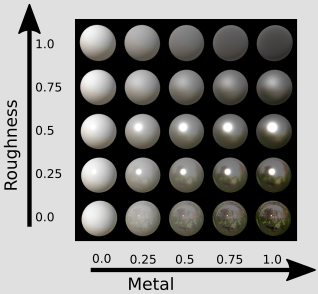

材料
介绍
glTF的目的是定义三维资源的传输格式。如前几节所示，这包括有关场景结构和场景中出现的几何对象的信息。但是glTF资产也可以包含关于外观对象的；也就是说，这些对象应该如何在屏幕上呈现。
一种材料的特性有不同的可能表示法，并且着色模型描述如何处理这些属性。简单的着色模型，如 方或 方百灵，由OpenGL或WebGL等常用图形API直接支持。这些着色模型是基于一组基本材质属性构建的。例如，材质属性涉及有关漫反射光的颜色（通常以纹理的形式）、镜面反射光的颜色和反光度参数的信息。许多文件格式正好包含这些参数。例如，波前OBJ文件与MTL包含此纹理和颜色信息的文件。渲染器可以读取此信息并相应地渲染对象。但是为了描述更真实的材质，需要更复杂的着色和材质模型。
基于物理的渲染（PBR）
若要允许渲染器在不同的照明条件下显示具有真实外观的对象，着色模型必须采用身体的考虑对象曲面的特性。这些物理材料特性有不同的表示。常用的一种方法是金属粗糙度模型. 在这里，关于物体表面的信息用三个主要参数编码：
- 这个基色，这是对象表面的“主”颜色。
- 这个金属的价值观。这是一个参数，用于描述材料的反射行为与金属的反射行为有多相似。
- 这个粗糙度值，指示曲面的粗糙程度，影响光散射。
金属粗糙度模型是glTF中使用的表示。其他材质表示，如镜面光泽度模型，通过扩展支持
不同金属和粗糙度值的效果如图所示：

基本颜色、金属和粗糙度属性可以作为单个值给出，然后应用于整个对象。为了给物体表面的不同部分指定不同的材质属性，这些属性也可以以纹理的形式给出。这使得可以对具有真实外观的各种真实材质进行建模。
根据着色模型，可以将其他效果应用于对象曲面。这些通常是纹理和比例因子的组合：
- 安发射的纹理描述对象表面发射特定颜色光的部分。
- 这个闭塞纹理可以用来模拟物体彼此自阴影的效果。
- 这个法线贴图是一种纹理，用于以某种方式调制曲面法线，从而可以模拟更精细的几何细节，而无需提高网格分辨率。
glTF支持所有这些附加属性，并为省略这些属性的情况定义合理的默认值。
以下各节将说明如何在glTF资源中对这些材质属性进行编码，包括各种材质示例：